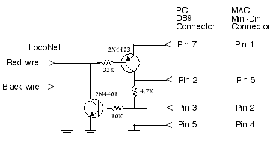

JMRI Install Guide: Keyspan USB connections
This page describes tests of two USB serial adapters with the Digitrax MS100 LocoNet interface.
The MS100 is a passive level shifter that gets its power from the control leads in the RS232 interface. Digitrax has not published a schematic, but Bill Robinson of Team Digital has graciously provided a schematic of their level shifter which is thought to be very similar.

Summary
- Keyspan PDA adapter P/N USA-19
- Summary: This worked fine.
-
Unfortunately, this adapter is no longer made. I believe that the replacement "Keyspan High Speed Serial Adapter" Part# USA-19QW is the same unit.
We've had a report that this PDA adapter can't work with a LocoBuffer at 57,600 baud. There seem to be multiple versions of the adapter, with slightly different model numbers, and it could be that some of them will only work to 56,000 baud.
- Keyspan Dual Serial Adapter P/N USA-28X
- Summary: This did not work.
- Problems: the USB adapter provides only one control line output, and the serial port outputs were only +/- 5V. This was not enough to power the MS100 during receive.
Details
- Keyspan PDA adapter P/N USA-19
- Summary: This worked fine.
-
This was actually the second USB serial adapter I tried, after the Keyspan Dual Serial Adapter (see below). This adapter provides a DB9 male plug, pinout available from the Keyspan product support page. Note that there are both RTS and DTR outputs; these can be separately controlled to provide + and - voltage to the MS100.
I connected it through a DB9 female to DB25 male adapter cable that I happened to have, and the test program was immediately able to communicate with the LocoNet.
DB9 female to DB25 male connections
DB9 pin DB25 pin ------- -------- DCD 1 8 RxD 2 3 TxD 3 2 DTR 4 20 ground 5 7 DSR 6 6 RTS 7 4 CTS 8 5 RI 9 22Note that I didn't test the level input from the MS100 (DSR, CTS).
- Keyspan Dual Serial Adapter P/N USA-28X
- Summary: This did not work.
-
The initial problem was that the USB adapter provides only one control line output (see pinout on the Keyspan product support page. This means that the serial port can only provide one of the two + and - levels needed for the MS100. Since there are two ports, I build a small adapter to use the control line from the second port to provide the other level.
The second problem was that the serial port outputs were only +/- 5V. This was not enough to power the MS100 during receive.
The following picture shows the transmit data levels from the Keyspan adapter. DC levels had similar ranges. This was a large enough swing to drive the LocoNet itself, but not to power the receive level shifter in the MS100.
Providing auxiliary +/- 9V power to the MS100, without using the output lines as a power source, was not sufficient. The following picture is the received data, nominally an RS232 signal of at least +/-6 volts, from the MS100. The received data signal was getting up to 6V, marginally OK, but it was not going below ground. The USB serial adapter was not reporting any received charaters to the Macintosh.
Hardware & software used
The tests were done with a PowerBook G4 400MHz, Mac OS 9.1. The test program was a Java application created with CodeWarrior 4.1.0.3 build 661. This program is available on request, see below for address. Java access to the USB serial adapters was via Patrick Beard's Macintosh implementation of javax.comm.
The Digitrax system was a Chief, DT100IR throttle, and various decoders on the layout. Traffic from command station, throttle and various auxiliary components (PM4, DS54) was available for testing.
 (click to enlarge)
(click to enlarge) (click to enlarge)
(click to enlarge) (click to enlarge)
(click to enlarge)Thanks and congratulations to all who contributed!
Copyright © 2003,2004 JMRI Community
Site hosted by: